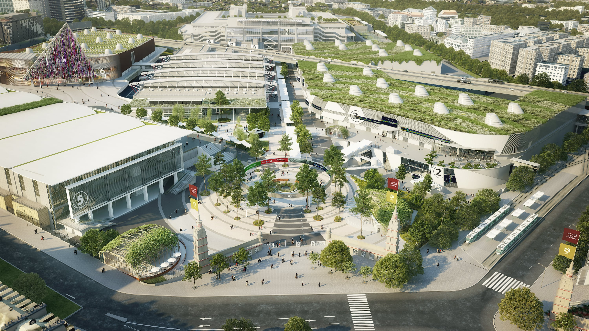

Courrier Olympique

La capitale française s'apprête à accueillir les Jeux Olympiques et Paralympiques de cette édition 2024, à partir du 26 juillet prochain. La thématique de l’environnement émerge alors, mais les organisateurs de Jeux ont pris des mesures ambitieuses pour faire de cet événement mondial un exemple de durabilité et de responsabilité écologique.

Sous le slogan "Unis par un rêve", les Jeux Olympiques de Paris 2024 visent à démontrer que le sport de haut niveau peut coexister harmonieusement avec la protection de notre planète. Une série d'initiatives vertes et de pratiques durables ont été mises en place pour atteindre cet objectif.
L'une des premières décisions révolutionnaires a été la favorisation de l'utilisation des transports publics, du covoiturage ou de la bicyclette a été mise en place, facilitant l’accès aux transports pour les athlètes, les officiels et les spectateurs. De plus, des mesures drastiques ont été prises pour minimiser l'empreinte carbone des Jeux. En effet, les organisateurs ont opté pour des installations temporaires construites avec des matériaux durables et recyclables. Ces structures sont conçues pour minimiser l'impact environnemental tout en assurant leur fonctionnalité pendant les Jeux.
Cependant, la durabilité des Jeux ne se limite pas à la logistique. Les organisateurs ont mis en place des initiatives pour sensibiliser et éduquer le public sur les défis environnementaux actuels. Des programmes éducatifs sur la conservation des ressources naturelles, la réduction des déchets et la promotion des énergies renouvelables ont été lancés dans les écoles et les quartiers de Paris et de ses environs.
Les athlètes eux-mêmes sont encouragés à devenir des ambassadeurs de l'environnement en adoptant des pratiques écologiques pendant les Jeux. Des mesures telles que l'utilisation de matériaux recyclés dans les tenues sportives, la limitation des emballages plastiques et la sensibilisation à l'empreinte carbone personnelle sont encouragées parmi les compétiteurs.
Les Jeux Olympiques de Paris 2024 se profilent donc comme une plateforme mondiale pour l'action environnementale. Ils démontrent que même les événements de grande envergure peuvent être organisés tout en minimisant leur impact sur la planète, et en inspirant un changement positif à l'échelle internationale. De plus, ces initiatives environnementales ont pour ambition d’être durables.
En conclusion, les Jeux Olympiques de Paris 2024 seront bien plus qu'une célébration du sport et de la compétition. Ils représenteront une étape cruciale dans la prise de conscience de l'importance de l'engagement envers la protection de notre environnement pour les générations futures.

DEBUNKAGE
Il est crucial de rester conscient des pièges potentiels liés à la communication environnementale, tels que le
greenwashing. Le greenwashing est une forme de publicité dans laquelle les relations publiques vertes et le
marketing vert sont utilisés de manière trompeuse pour persuader le public que les produits, les objectifs et
les politiques d'une organisation sont respectueux de l'environnement dans le but de masquer ses réelles
pratiques environnementales.
La communication des organisateurs Malgré les ambitions affichées par les organisateurs des Jeux
Olympiques de Paris 2024 en faveur de l'environnement, il est important de rester proche à la réalité des
progrès accomplis.
Tout d'abord, tous les événements olympiques précédents ont eu un impact majeur sur l'environnement, et
les JO 2024 de Paris n'y feront pas exception, malgré la communication des organisateurs déclarant que ce
seront "les JO les plus verts de l'histoire", avec une réduction de moitié des émissions de CO2 par rapport
aux JO d’été précédents.
Les organisateurs prévoient un bilan carbone de 1,58 million de tonnes d’équivalent CO2. Soit deux fois
moins d’émissions que les jeux de Londres en 2012 et Rio en 2016, qui ont chacun rejeté dans l’atmosphère
3,5 millions de tonnes d’équivalent CO2, et moins que les jeux de Tokyo de 2020, dont le bilan carbone s’est
établi à 1,96 million de tonnes. Pourtant, les Jeux s’étaient déroulés en pleine pandémie de Covid et sans
spectateurs.
De plus, la bétonisation de grands espaces, avec tous les polluants que cela inclut représente la mort de
nombreux espaces verts, avec notamment la bétonisation de l'Aire des vents à Dugny (Seine-Saint-Denis)
pour la construction du village des médias ou encore la destruction des Jardins d'Aubervilliers
(Seine-Saint-Denis).
De plus, les chantiers de construction vont également générer des problèmes environnementaux dû au fait
que le trafic double de volume avec les chantiers proche d’une du Groupe scolaire Pleyel - Anatole France,
avec un trafic de 10.000 à 20.000 véhicules par jour et donc une augmentation de la pollution
atmosphérique et sonore.
En résumé, il est important de rester vigilant quant aux objectifs des JO. Car ici les organisateurs des JO
utilisent un biais de sélection et d'ancrage en utilisant seulement certaines avancées précises concernant
l'environnement (utilisation réduite de matières recyclées) en oubliant les conséquences écologiques
catastrophiques des Jeux Olympique.